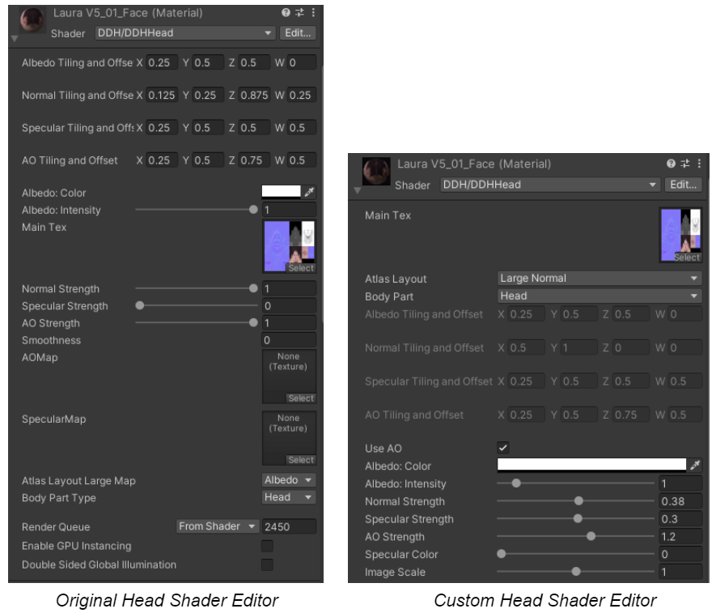

Dynamic Digital Humans Documentation
Setting up textures
DDH Tools has its own custom shader editors. If this custom editor for the Head, Hair or Mouth did not import correctly and shows the original editors, then in the Project Menu, navigate to Packages>Dynamic Digital Humans>Shaders>URP>2020 and select the appropriate shader. Then either double-click the shader and click Save Asset or right-click the shader and click Reimport.
NOTE
- For the Head Shader use DDHHead
- For the Hair Shader use DDHHair
- For the Mouth Shader use DDHHead
An example of the difference between the original editor and custom DDH Tools editor is shown below.
For more information on shaders, click here.
Depending on how the character was imported into Unity, textures may automatically be applied with the desired settings. If the character does not have the right textures, then make changes as needed according to settings shown below.
NOTE
For furthur reference on texture settings, watch this video from 7:26 onwards
NOTE
The specific values used for the texture settings in this section (shown in brackets) and the atlas videos are for the LauraV5_01 model. They can be used for your own character model or adjusted as needed.
Open the prefab asset created and change the textures as required.
Face
For the face texture, select Head_ Geo in the Hierarchy menu or select the character's head and expand the Face (Material) section.
- Set the shader (DDH/DDHHead)
- Check if the Atlas Layout and Body parts have been set appropriately
- Enable Use AO
- Set the Albedo color (white)
- Adjust Normal Strength to attain the desired level of detail on the face
- Set the image scale (1)
- Make any other adjustments as needed
Eyelash
For the eyelash texture, select Head_Geo in the Hierarchy menu or select the character's head and expand the Eyelash (Material) section.
- Set the Shader (Universal Render Pipeline/Lit)
- Set the Surface Type (Transparent)
- Click the circle next to Base Map and set eyelash texture ('Std_Eyelash_Diffuse')
- Set the Base Map color (black)
- Set Smoothness to 0.1
- Click the circle next to Normal Map and set normal texture ('Std_Eyelash_Normal')
- Make any other adjustments as needed
Eyeball
For the eyeball texture, select Head_Geo in the Hierarchy menu or select the character's head and expand the Eyeball (Material) section.
- Set the Shader (Universal Render Pipeline/Lit)
- Click the circle next to Base Map and set eyeball texture (Ga_Eye_L_Diffuse)
- Set the Base Map color (white)
- Set Smoothness (1)
- Set the Workflow Mode (Specular)
- Make any other adjustments as needed
NOTE
A custom shader for the eyeballs has also been created. Use either the Universal Render Pipeline/Lit shader or the custom DDHEye shader based on what is needed.
Custom eye shader
- Set the Shader (Shader Graphs/DDHEye)
- Click the circle next to Base Map and set eyeball texture (Ga_Eye_L_Diffuse)
- Set the Base Map color (E2E2E2)
- Set Smoothness (1)
- Click the circle next to Normal Map and set normal (Std_Cornea_R_Iris N)
- Click the circle next to AO Map and set AO (Mouth AO_test)
- Make any other adjustments as needed
Body Skin
For the skin texture, select Body_Geo in the Hierarchy menu or select the character's body and expand the Body_Skin (Material) section.
- Set the Shader (Universal Render Pipeline/Lit)
- Set Workflow Mode to Specular
- Set Surface Type to Opaque
- Click the circle next to Base Map and set skin texture (3_meshes_Merge_Diffuse)
- Set the Base Map color (LauraV5: E5E5E5; Jasmine V2: C3AAB5)
- Set Specular Map color (303030)
- Set Smoothness (0.08) and Source (Albeo Alpha)
- Click the circle next to Normal Map and set the normal texture ('3_meshes_Merge_Normal') and strength (2)
- Make any other adjustments as needed

Clothing
For the clothing texture, select Body_Geo in the Hierarchy menu or select the character's body and expand the Body_Clothing (Material) section.
- Set the Shader (Universal Render Pipeline/Lit)
- Click the circle next to Base Map and set clothing texture (4_meshes_Merge_Diffsue)
- Set the Base Map color to (white; FFFFFF)
- Click the circle next to Normal Map and set the normal texture ('4_meshes_Merge_Normal')
- Set the Surface Type (Opaque)
- Make any other adjustments as needed
Hair
For the hair texture, select Hair_Geo in the Hierarchy menu or select the character's hair and expand the Hair_Ponytail (Material) section.
- Set the Shader (DDH/DDHHair)
- Click the Select square in Base Map and set hair texture (Hair_Transparency_Diffuse)
- Click the Select square in AO Map and set AO hair texture (Hair_Transparency_ao)
- Set Normal Map Texture (None)
- Set the Base Map color to (white; FFFFFF)
- Adjust these settings as needed:
- Normal Map Strength (0.6)
- Fresnel Bias (0.45)
- Fresnel Scale (0.6)
- Fresnel Power (7.5)
- Fresnel Color (Brown; 5B3D04)
- Make any other adjustments as needed
NOTE
Custom shaders from Unity Auto-setup can also be used for improvements to the hair texture. For more information click here.
Mouth
For the mouth texture, select Head_ Geo in the Hierarchy menu or select the character's mouth and expand the Mouth (Material) section.
- Set the shader (DDH/DDHHead)
- Check if the Atlas Layout and Body parts have been set appropriately
- Set the Albedo color (white; FFFFFF) and Albedo Intensity (1)
- Set Specular Strength (0)
- Set AO Map Texture (Mouth AO_test) with Tiling and Offset: 0.1, 0.5, 0.5, 0.3
- Enable Use AO and set the AO strength to 1.6
- Set the image scale (1)
- Make any other adjustments as needed